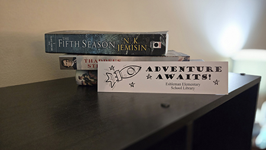

Dan Zalewski's AENG 110 Portfolio |
||
| Home Bookmark Digital Photography Videography Infographic About Me |
Bookmark (a.k.a Lithographic Printing) |
|
|
Lithographic printing is the process of producing a large quantity of prints using the principals of the seperation of oil and water. Since water repels oil, the two can be used to allow oil based inks to adhere only to a designated area and then having that oil be transferred to a substrate.
|
|
|  | |
Reflecting on my ProjectIn review, I am very happy with how this project turned out. I wanted to accomplish creating a bookmark that played to the immagination of the students that would be utilizing these bookmarks. Thinking about the demographics that we were creating for, I believe I did a good job catering to elementary school students. |
|
| Home My Favorite Project My Youtube About Me |
Copyright © 2025 Dan Zalewski |
|